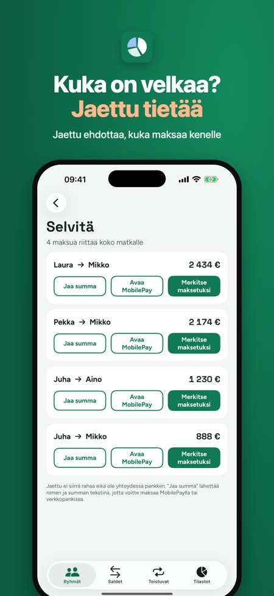
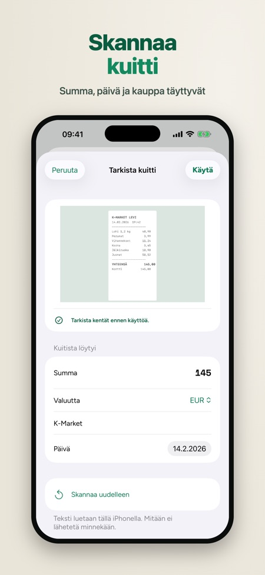
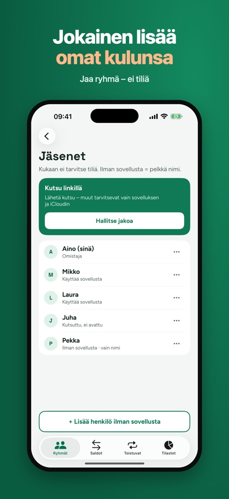

Mökkireissu ja kimppakämppä. Kuka maksoi mitä ja kuka on velkaa kenelle? Lisää reissun tai kimppakämpän kulut ja selvitä ne mahdollisimman vähillä maksuilla. Ei tiliä.



Jaa mökkireissun, kimppakämpän tai matkan kulut ilman taulukoita ja ilman tiliä. Lisää kuka maksoi mitäkin, niin Jaettu näyttää, kuka on velkaa kenelle ja miten velat selvitetään mahdollisimman vähillä maksuilla.
NÄIN SE TOIMII
• Luo ryhmä reissulle, mökille, kimppakämpälle tai juhliin ja lisää ihmiset. Ne, joilla ei ole sovellusta, lisätään pelkällä nimellä.
• Lisää kulu sekunneissa näppäimistöllä: summa, kuka maksoi ja ketkä jakavat.
• Jaa tasan, osuuksin, tarkoin summin tai prosentein. Jaettu tarkistaa, että summa täsmää.
• Saldot näyttävät, kuka saa takaisin ja kuka on velkaa. Yksikään sentti ei katoa – saldot täsmäävät aina, samoin kaikissa puhelimissa.
• Selvitä: Jaettu ehdottaa mahdollisimman vähän maksuja (”Mikko maksaa Ainolle 62 €”). Jaa summa tekstinä tai avaa MobilePay ja merkitse se maksetuksi.
JAA RYHMÄ ICLOUDIN KAUTTA
Kutsu muut iCloud-linkillä. Sovelluksen käyttäjät lisäävät omat kulunsa, ja muutokset synkronoituvat. Kukaan ei tarvitse tiliä meillä, eikä mainoksia ole: ryhmät ovat omassa iCloudissasi, eivät palvelimillamme. Toimii myös ilman verkkoa – muutokset lähtevät, kun olet taas verkossa. Jokaisella kululla on historia, joten kaikki näkevät, kuka muutti mitä.
JAETTU PLUS (KERTAOSTO)
• Skannaa kuitti: summa, päivä ja kauppa täyttyvät, ja kuva tallentuu kuluun (kolme ensimmäistä skannausta ilman ostoa)
• Useita valuuttoja itse syötetyllä kurssilla
• Kimppakämpän toistuvat kulut: vuokra, sähkö ja internet lisätään joka kuukausi (yksi toistuva kulu ilman ostoa)
• Tilastot luokittain ja henkilöittäin, vienti taulukkoon (CSV) ja PDF
Ryhmiä, kuluja, saldoja, selvitystä ja kuvaa saldoista voi käyttää ilman ostoa – ei päivärajaa.
Jaettu ei siirrä rahaa eikä ole yhteydessä pankkiin. Maksatte itse, esimerkiksi MobilePaylla tai verkkopankissa.
Kielet: suomi, norja, tanska ja englanti.